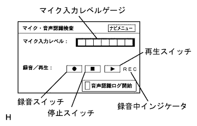
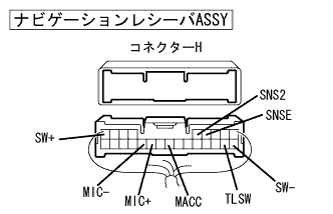
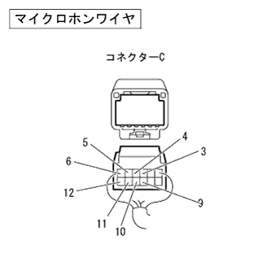
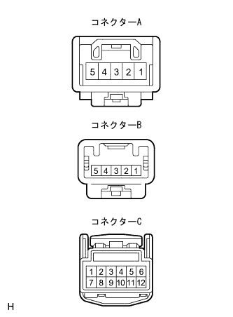
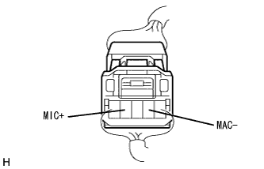
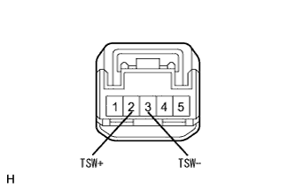

Hands Free System Hands Free Call cannot be transmitted (I can't hear my voice to the other person)/Noise is included |
reference)reference)reference)| Step 1 | Diagnostic activation |
reference| Step 2 | Mike test (microphone input level) |
|  |
Mike test (microphone input level)
Select "Navi Inspection" on the diagram inspection menu screen and display the navigation inspection menu screen.
Select the "microphone / speech recognition test" on the navigation menu screen and display the microphone audio recognition inspection screen.
Voice toward the microphone and check the display of the microphone input level gauge.
|
| ||||
| OK | |
| Step 3 | Mike test (recording / regeneration of voice voice) |
Mike test (recording / regeneration of voice voice)
After pressing the recording switch, the voice is uttered for the microphone and the audio is recorded.
Press the playback switch and check the recorded audio.
|
| ||||
| OK | |
| Step 4 | Mobile phone exchange |
Mobile phone exchange
Connect the staff's Bluetooth compatible mobile phone with the permission of the customer.
Confirm the call.
|
| ||||
| NG | ||
| ||
| Step 5 | Navigation receiver ASSY inspection (microphone power supply, earth) |
 |
Preparation before inspection
Cut the connector H from the navigation receiver ASSY.
Voltage inspection
Use the SST (Toyota Electrical Tester) to check the voltage between the connector Macc (H17) terminal and the body ground ground on the side of the navigation receiver asy.
| Tester connection (Plus ← → minus) | Measurement conditions | standard |
|---|---|---|
| Macc (H17) ← → Body Earth | IG Switch ACC | 5V |
Conduction inspection
Use SST (Toyota Electrical Tester) to inspect each terminal of the navigation receiver ASSY and the conjunction between the body earth.
| Tester connection (Plus ← → minus) | Measurement conditions | standard |
|---|---|---|
| TSW- (H12) ← → Body Earth | Always | There is an conductor |
| MIC- (H20) ← → Body Earth | Always | There is an conductor |
|
| ||||
| OK | |
| Step 6 | Wire harness and connector inspection (navigation receiver ASSY ← → Micro hon wire) |
reference)|  |
Preparation before inspection
Cut the connector H of the navigation receiver ASSY.
|  |
Cut the Micro Hon wire connector C.
Conduction inspection
Use SST (Toyota Electrical Tester) to check the conversation between the wire harness connectors on the wire harness connector on the navigation receiver ASSY side.(The terminal array isreference)
| Tester connection (Navigation receiver ASSY side ← → Navigation receiver ASSY side) | standard |
|---|---|
| SGND (H18) ← → TSW- (H12) | There is an conductor |
Conduction inspection
Use SST (Toyota Electrical Tester) to check the navigation receiver ASSY ← → Microphone wire wire harness.(The terminal array isreference)
| Tester connection (Navigation receiver ASSY side ← → Micro hon wire side) | standard |
|---|---|
| SNSE (H4) ← → C1 | There is an conductor |
| SNS2 (H5) ← → C7 | There is an conductor |
| Sw+(h9) ← → C10 | There is an conductor |
| SW- (H10) ← → C11 | There is an conductor |
| TLSW (H11) ← → C9 | There is an conductor |
| Macc (H17) ← → C6 | There is an conductor |
| MIC+(H19) ← → C4 | There is an conductor |
| MIC- (H20) ← → C3 | There is an conductor |
Short -circuit inspection
Use SST (Toyota Electrical Tester) to inspect the conjunction between the wire harness connector and the body ground ground on the side of the navigation receiver asy.(The terminal array isreference)
| Tester connection (Navigation receiver ASSY side ← → Body Earth) | standard |
|---|---|
| SNSE (H4) ← → Body Earth | Without conduction |
| SNS2 (H5) ← → Body Earth | Without conduction |
| SW+(H9) ← → Body Earth | Without conduction |
| SW- (H10) ← → Body Earth | Without conduction |
| TLSW (H11) ← → Body Earth | Without conduction |
| Macc (H17) ← → Body Earth | Without conduction |
| MIC+(H19) ← → Body Earth | Without conduction |
| MIC- (H20) ← → Body Earth | Without conduction |
Conduction inspection
Use SST (Toyota Electrical Tester) to inspect the conductor between each terminal of microfon wire and between body earth.
| Tester connection (Plus ← → minus) | standard |
|---|---|
| C5 ← → Body Earth | There is an conductor |
|
| ||||
| OK | |
| Step 7 | Microphone wire single inspection |
|  |
Conduction inspection
Inspection of each terminal using SST (Toyota Electrical Tester).
| Measuring terminal (Terminal name) | standard |
|---|---|
| A1 (sgnd) ← → C5 (sgnd) | There is an conductor |
| A2 (mic-) ← → C3 (mic-) | There is an conductor |
| A4 (mic+) ← → C4 (mic+) | There is an conductor |
| A5 (Macc) ← → C6 (Macc) | There is an conductor |
| B1 (ILL+) ← → C12 (ILL+) | There is an conductor |
| B2 (TSW+) ← → C9 (TSW+) | There is an conductor |
| B3 (TSW-) ← → C11 (SW-) | There is an conductor |
| B4 (SW-) ← → C11 (SW-) | There is an conductor |
| B5 (SW+) ← → C10 (SW+) | There is an conductor |
|
| ||||
| OK | |
| Step 8 | Telephone Microphone ASSY inspection |
|  |
Waveform inspection
IG Switch ACC.
Use SST (TASCAN) to check the waveform between the 4 (mic+) ← → 2 (Mac-) of the terminals with the connector of the telephone microphone asshon Assembly connected.
|
| ||||
| OK | |
| Step 9 | Telephone switch Assembly inspection |
|  |
Resistance inspection
Use SST (Toyota Electrical Tester) to inspect the conduction and resistance between 2 (TSW+) ← → 3 (TSW-) terminals of telephone switch assy when operating the switch.
| Measurement conditions | Reference value |
|---|---|
| Without pressing the switch | Approximately 100kΩ |
| Pressing off hook switch | 0Ω |
| Pressing on -hook switch | Approximately 3kΩ |
|
| ||||
| OK | ||
| ||